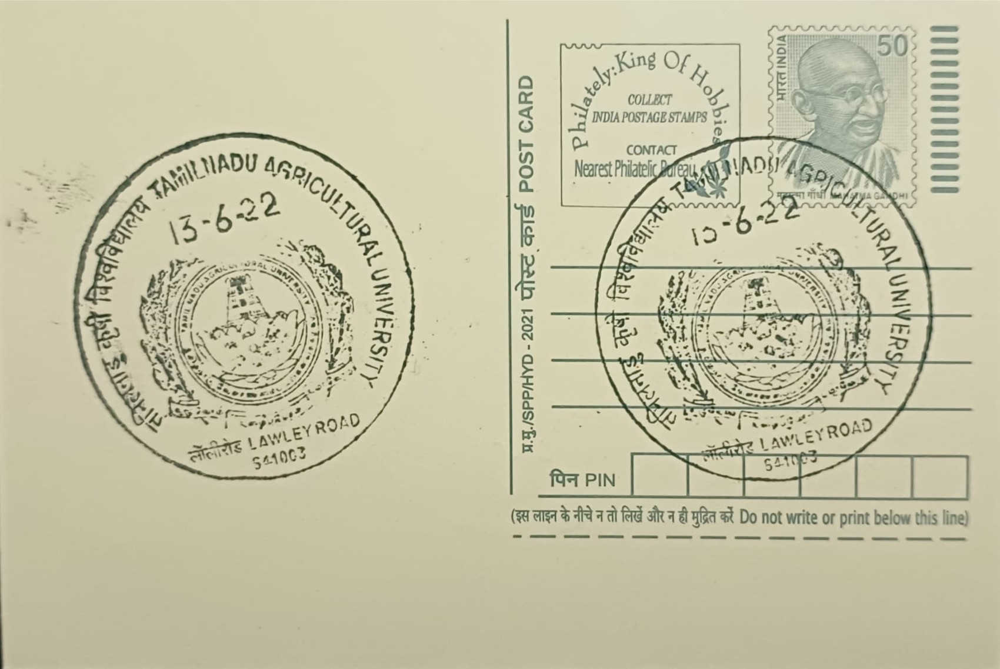

Logo of Tamil Nadu Agricultural University
தமிழ்நாடு வேளாண்மைப் பல்கலைக்கழகத்தின் சின்னம்


The emblem of Tamil Nadu Agricultural University (TNAU) took shape alongside the institution's own transformation from a colonial agricultural college into a full-fledged state university in 1971, when the erstwhile Madras Agricultural College and allied research bodies were unified under one statutory body headquartered in Coimbatore. Rendered in the university's established red and white, the logo draws on motifs of cultivation and growth, befitting an institution whose Tamil motto, "Uzhuvom, Uzhaippom, Uyarvom" (We will till, we will toil, we will rise), frames agriculture as both livelihood and a path to collective advancement for the state's farming communities.
As an institutional mark, the TNAU logo signifies more than a single campus: it represents the first State Agricultural University in India to be formally recognised by the Indian Council of Agricultural Research (ICAR), a distinction that places Coimbatore at the head of India's state-run agricultural education network rather than treating it as one centre among equals. The identity is used across a university system that today comprises numerous government and affiliated agriculture colleges statewide, along with dedicated research institutes, making the crest a unifying emblem for teaching, research and extension work carried out under a single administrative and academic umbrella rather than for any one building or faculty alone.
The logo's home institution traces to the Agricultural College and Research Institute whose foundation stone was laid on Lawley Road in Coimbatore on 24 September 1906 by Sir Arthur Lawley, then Governor of Fort St. George, with construction completed and the college formally opened in 1909. Built in the Hindu-Saracenic style from red table-moulded brick and finely dressed cutstone, the original building is distinguished by a 75-foot clock tower that remains a recognisable landmark of the Lawley Road campus; the college affiliated with the University of Madras in 1920, introducing the B.Sc. (Agriculture) degree whose first graduates emerged in 1923, decades before the present university identity and emblem came into use.
A particular point of distinction for the institution the logo represents is its sustained record in applied crop research, including cotton and sugarcane breeding programmes and horticultural work tailored to Tamil Nadu's varied agro-climatic zones, output that has repeatedly been recognised at the national level; ICAR ranked TNAU among the top state agricultural universities in the country and conferred on it the Sardar Patel Outstanding ICAR Institution Award in 2021, alongside an Institute of Excellence recognition the same year. These accolades are typically cited alongside the university crest in official communications, linking the symbol directly to measurable research outcomes rather than to ceremonial status alone.
Administration of the university, and by extension stewardship of its emblem, rests with the TNAU headquarters at the Lawley Road campus in Coimbatore, which continues to oversee a network of constituent colleges, regional research stations and extension centres spread across Tamil Nadu. The clock-towered heritage building on this campus, now more than a century old, functions alongside modern laboratories and farm research blocks, housing administrative offices that coordinate curriculum, germplasm research and farmer outreach under the same crest first associated with the college's 1906 founding. The logo, in this sense, functions today as the working insignia of an active public university rather than a historical relic, appearing on degrees, research publications and extension literature distributed to farmers across the state.
| Date of Introduction | July 1, 2019 |
|---|---|
| Address | Sub Postmaster, |
| TNAU-Lawley Road SO, | |
| Coimbatore (dt.), Tamil Nadu - 641003. |